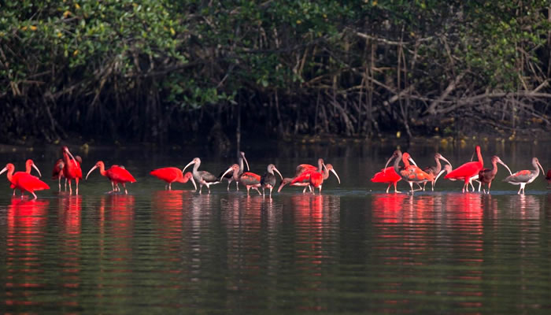
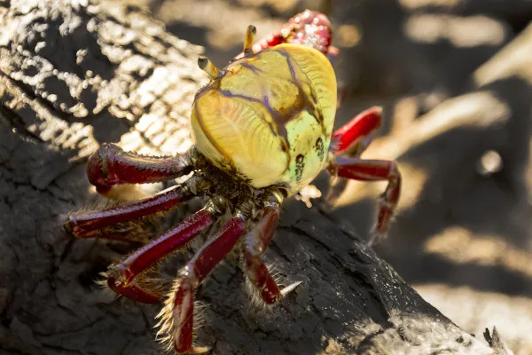
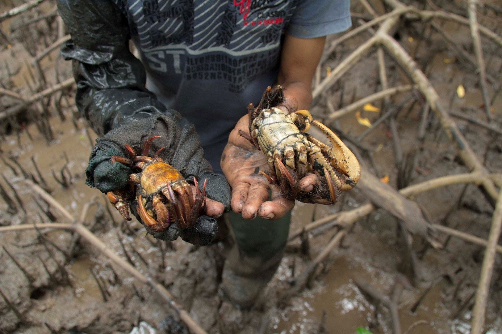
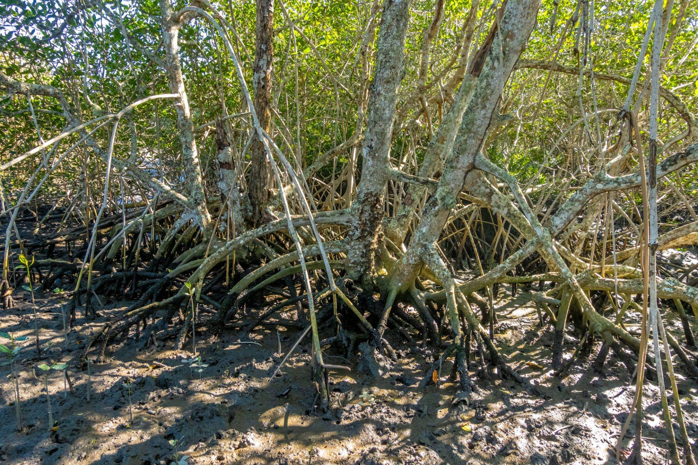
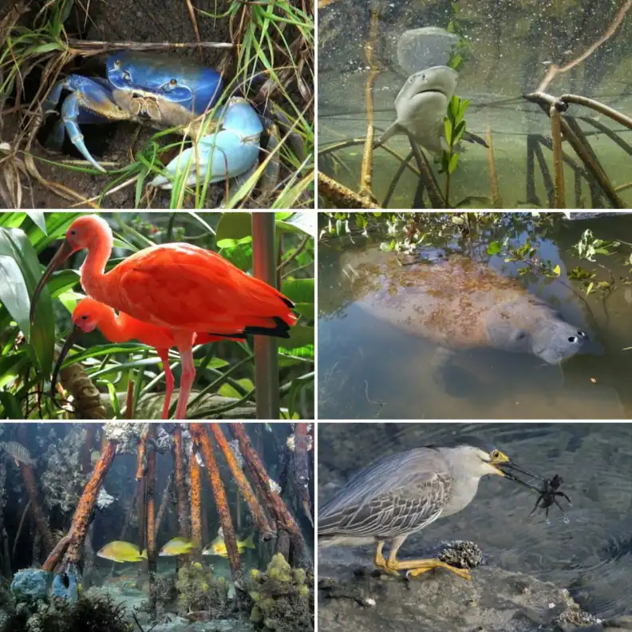
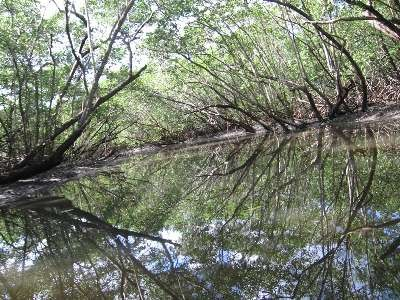
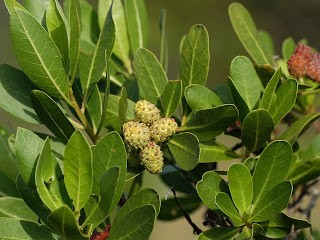
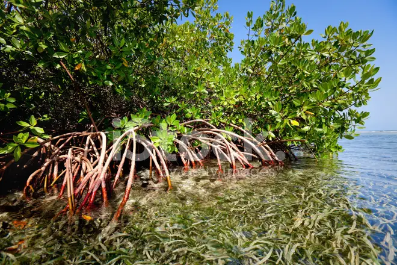
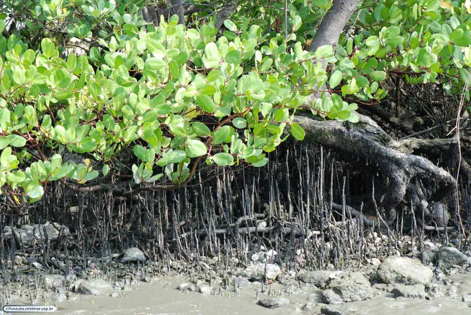
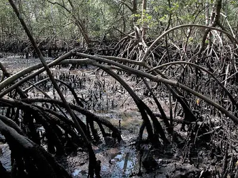

Sobre o Projeto
O Projeto Manguezal é uma iniciativa dedicada à conscientização sobre a importância de conservar e proteger o manguezal e sua biodiversidade. Localizado no município de São Gonçalo, o manguezal é um ecossistema único e vital, abrigando uma rica variedade de espécies e desempenhando um papel crucial na proteção do litoral e no combate às mudanças climáticas.
Quer saber mais? Clique aqui para ler nossos artigos!
Dados e Estatísticas
O Projeto Manguezal tem como objetivo principal promover a conscientização sobre a importância do manguezal e sua biodiversidade, além de incentivar ações de conservação e proteção. Nossa equipe está comprometida em fornecer informações precisas e atualizadas sobre o manguezal, suas espécies e os desafios que enfrenta.
- Área total: 12,3 km²
- Número de espécies: 1.500 aproximadamente
- Pessoas que usam o manguezal: 2.000 aproximadamente
- Esses números podem variar com base na pesquisa e coleta de dados, mas demonstram a importância do manguezal para a comunidade local e para o meio ambiente.
Galeria de Imagens

Flamingos

Caranguejo

Coletor de caranguejo

Manguezal

Fauna do manguezal

Floresta de mangue

Mangue de botão

Mangue vermelho

Mangue branco

Mangue preto